Nous passons l'après-midi de ce 4ème jour à Óbidos. Le ciel se couvre et bientôt nous devrons sortir nos parapluies!
Óbidos est un village fortifié qui, autrefois, surplombait la mer. Celle-ci a fait place à une lagune. La ville doit sa renommée au roi Dinis Ier qui, en 1282, offrit le château moresque à sa femme Isabel d'Aragon. Depuis ce temps, tous les souverains portugais réitérèrent ce geste à l'égard de leurs épouses jusqu'en 1833. En 1950, le château fut transformé en auberge. Aujourd'hui les remparts renferment 14 églises et chapelles, des buissons de bougainvillées, une multitude d'échoppes et tout un réseau de rues pavées que longent des maisons blanches rehaussées de bleu marine ou de jaune safran.
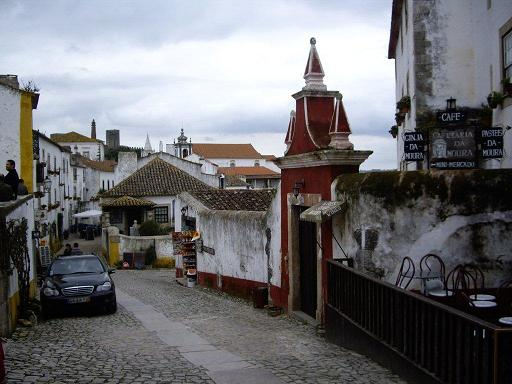
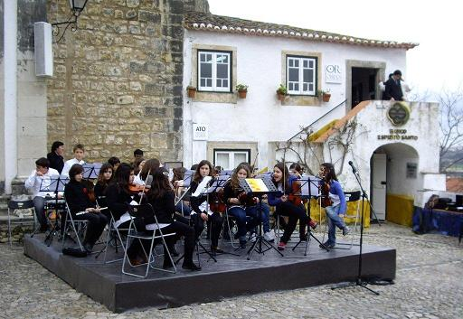
Óbidos célèbre le chocolat!
À cette époque de l'année, les touristes sont loin et les Portugais sont entre eux. La municipalité très active d'Óbidos, selon Dora qui connaît personnellement le maire, a organisé une fête du chocolat. À l'entrée de la ville un orchestre d'enfants est prêt à officier.
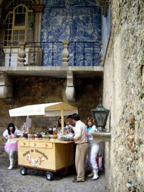
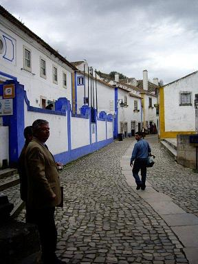
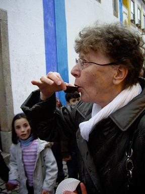
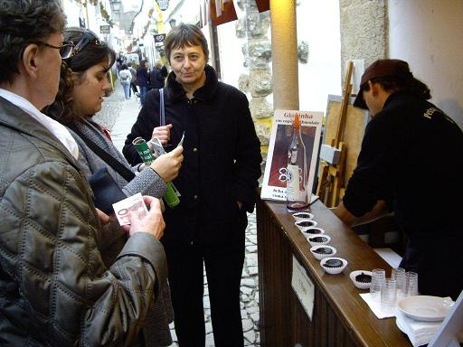
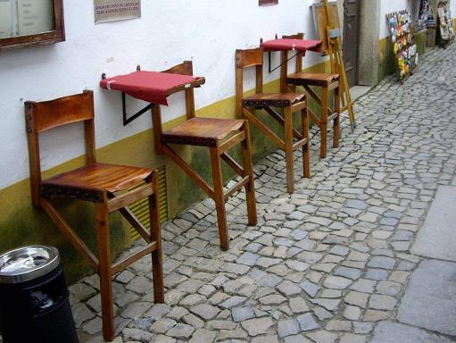
Óbidos: dégustation de "Ginjinhada" (liqueur de cerise Morello)
Après être passés sous la
porta da Vila
(porte de la Ville) décorée de beaux carreaux d'azulejos du XVIIIème siècle, nous commençons notre ascension vers le château en suivant la rue principale.
À titre d'indemnisation pour l'incident du matin, Dora, nous invite à une dégustation de la liqueur locale à base de cerise Morello, la "Ginjinhada" d'Óbidos, servie pour l'occasion dans des tasses en chocolat qu'on consomme après usage.
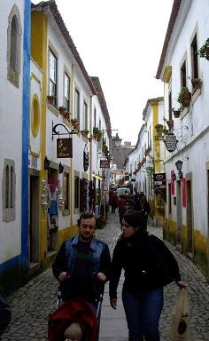
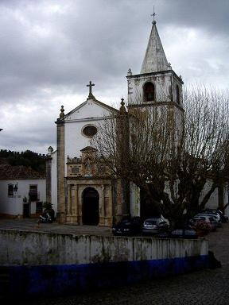
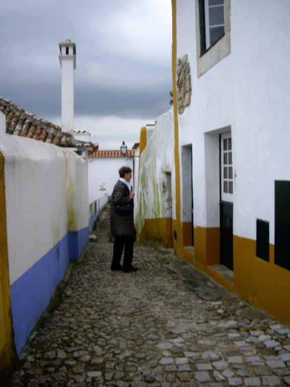
Óbidos: montée vers l'exposition de gâteaux en chocolat - Église Sainte Marie
L'église Sainte Marie est une église Renaissance qui a remplacé une mosquée mauresque. C'est là que le futur Alfonse V épousa à l'âge de 10 ans sa cousine Isabelle de 2 ans sa cadette! On aperçoit derrière l'arbre un pilori du XVème siècle. L'église joue un rôle primordial pendant les processions de Pâques qui durent ici deux semaines.
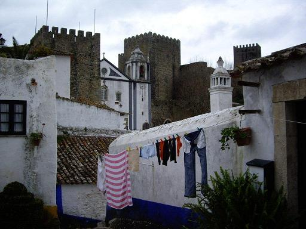
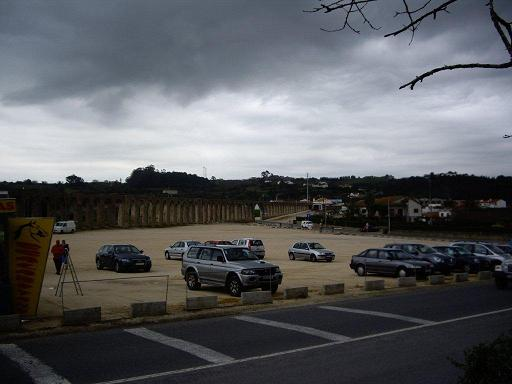
Óbidos: tours du château et aqueduc
Notre longue déambulation nous conduit à une église coincée entre deux tours des remparts. C'est ici que sont exposés les fameux gâteaux en chocolat. Les jeunes cuisiniers arborent fièrement leurs toques et leurs médailles. Au mur une citation (en portugais) du seul philosophe français encore vénéré à l'étranger: Brillat-Savarin.
Dehors, on constate les effets d'une consommation immodérée de chocolat: Les grands sont devenus tout noirs, les petits couverts de pustules...
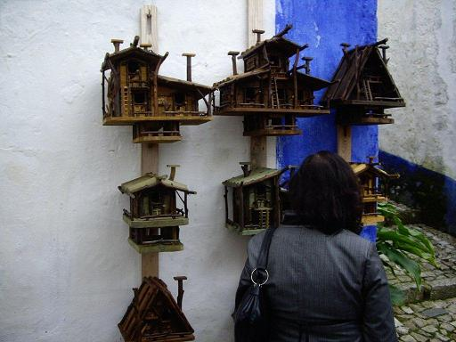
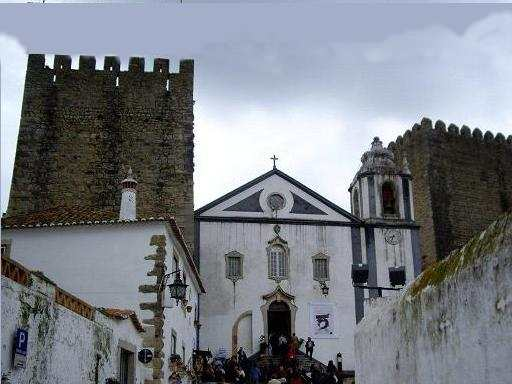
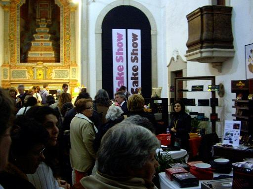
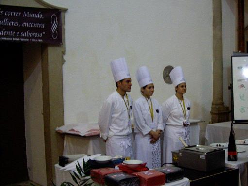
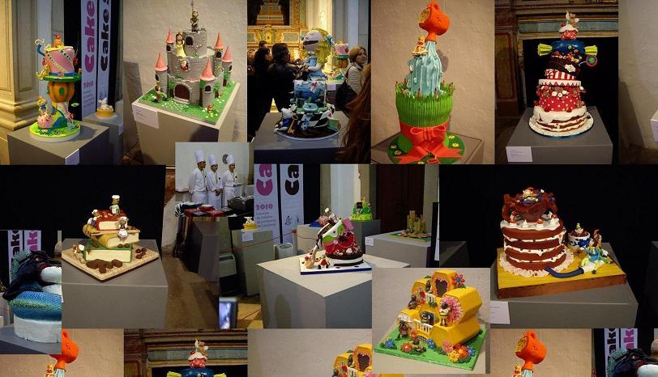
Óbidos: concours de chocolatiers.
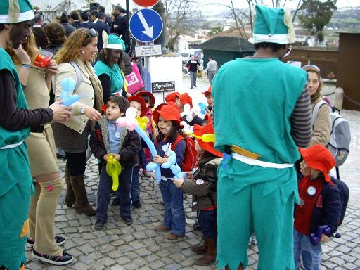